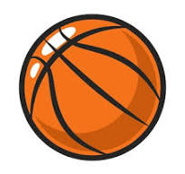

Баскетбол
Баскетбо́л (англ. basketball від basket — «кошик» і ball — «м'яч»; заст., діал. кошикі́вка або коші́вка) — спортивна командна гра з м'ячем, який закидають руками в кільце із сіткою (кошик), закріпленою на щиті на висоті 3 метри 5 сантиметрів (10 футів) над майданчиком. Баскетбол є олімпійським видом спорту.
Грають дві команди по 5 осіб на майданчику 28×15 м. На коротких сторонах майданчика укріплені на щитах на висоті 305 см «кошики» — металеві кільця діаметром 45 см з мотузяною сіткою без дна. Переможцем визнається команда, якій вдалось більше число разів закинути м'яч у «кошик» супротивників. Тривалість гри — чотири періоди по 10 хвилин, з двохвилинними перервами між першою та другою і третьою й четвертою чвертями, та великою перервою у 15 хвилин між другим та третім періодом. У Національній баскетбольній Асоціації гра триває 48 хвилин і розбивається на 4 чверті.
Перший чоловічий чемпіонат світу проведено в 1950-у році, а в 1953-му — жіночий. У наші дні першості світу проводять кожні чотири роки. Найпрестижніші змагання серед збірних команд країн — Олімпійські ігри, Чемпіонат світу з баскетболу, а серед клубних — чемпіонат НБА та в Європі — Євроліга УЛЕБ, Єврокубок та Кубок виклику ФІБА.